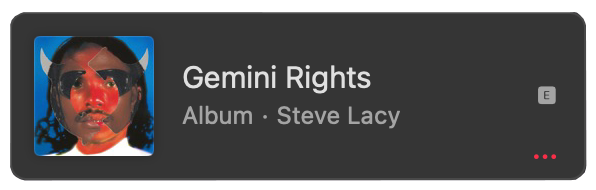

Music
Most Noteable Songs and Features
- Bad Habit (Gemini Rights)
- Dark Red (Steve Lacy's Demo - EP)
- 911/ Mr. Lonely (feat. Frank Ocean and Steve Lacy)
Latest Album
Steve Lacy's Gemini Rights on Apple Music
Gemini Rights
Gemini Rights is his sophomore album which has ten songs including previously released “Mercury” and “Bad Habit.”
According to Mankaprr Conteh from Rolling Stone, "Gemini Rights feels like the product of a grand jam session, and is, in fact, Steve Lacys most collaborative solo effort to date" and filled with a "tight collection of rock and R&B, funk and jazz, psych and hip-hop thats as warm and airy as the cusp of summer".